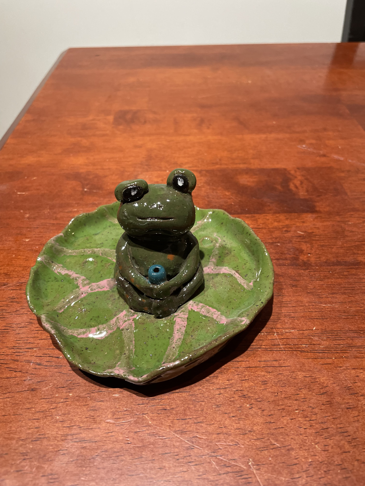

Pottery has been one of the most rewarding and grounding activities in my life. I first discovered it in high school, almost by accident—I signed up for a ceramics class out of curiosity, not realizing how much I would come to love it. There’s something magical about starting with a simple lump of clay and slowly shaping it into something real and functional. The process is both methodical and expressive, requiring patience, control, and creativity all at once. One of my favorite parts of pottery is working on the wheel. At first, it feels like an impossible task—centering the clay, keeping it steady, and shaping it without letting it collapse. But over time, I learned to trust my hands and the feel of the clay. The moment when everything clicks, when the clay moves smoothly under your fingers and takes the exact shape you imagined, is incredibly satisfying. Beyond the technical aspects, pottery is a meditative experience for me. It forces me to slow down, focus, and be present in the moment. Even when a piece doesn’t turn out perfectly, I love that each one has its own unique character. Since coming to Northeastern, I’ve continued exploring ceramics, experimenting with new shapes and glazes. Pottery reminds me that imperfections can be beautiful and that learning comes from every step of the process.
